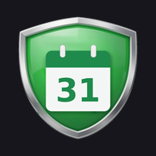

Mobil
Még nincsenek adatok ezen a telefonon.
A gépen: Naptárak → Saját naptár kifelé → közzétételi mappa (pl. Dropbox\Naptár), és legyen bepipálva a „Telefonos app adatai is”. A mappában megjelenik az ArrabonaNaptar_mobil.json. Ezt válaszd ki itt a Fájlok appból (Dropbox → Naptár).
Vagy add meg a fájl Dropbox-linkjét, és akkor magától frissül (Beállítások → Dropbox-link).
Adatok a gépről
Dropbox-link (automatikus frissítéshez)
A gépen a Dropbox\Naptár mappában jobb gomb az ArrabonaNaptar_mobil.json-on → Megosztás → Hivatkozás másolása. Illeszd be ide. Ha megvan, az app minden megnyitáskor magától frissít.
Küldés a gépre
A telefonon végzett változásokat (esemény, teendő, műszak) a „Küldés a gépre” gombbal küldöd át: a megosztás ablakban Mentés a Fájlokba → Dropbox → Naptár (ha kérdezi: Csere). A gépen futó Naptár pár másodpercen belül átveszi, utána a következő frissítéskor itt is „szinkronban” lesz.
Emlékeztetőt ez az app nem tud küldeni (az iPhone ezt webappnak nem engedi). Az értesítésekhez használd az iPhone Naptárában a feliratkozott „Arrabona Naptár”-t – az a gép emlékeztetőit is hozza.